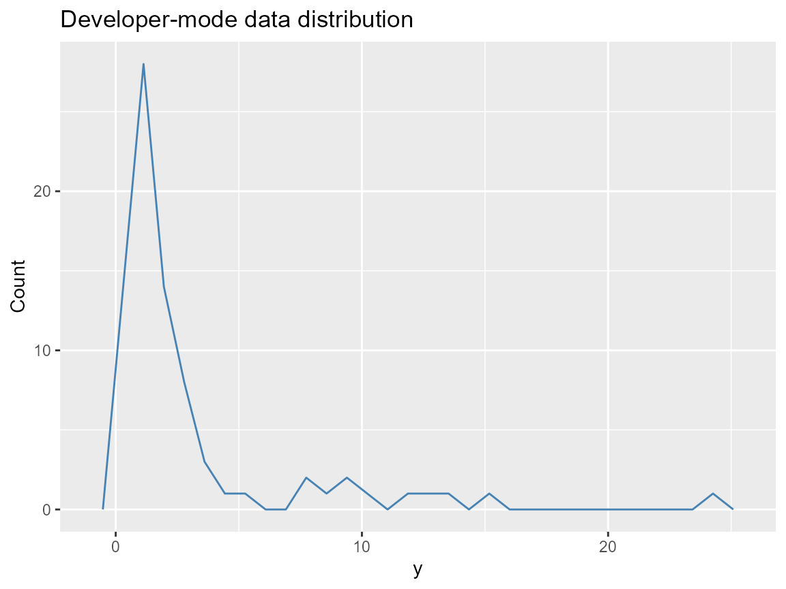

Developer Guide: Adding a Kernel / Extending the Engine
Source:vignettes/v10-developer-guide.Rmd
v10-developer-guide.RmdWhat you’ll learn: how to register a new kernel, the Nimble hooks needed, and the minimal regression suite for keeping the engine stable.
Kernel registry steps
- Call
init_kernel_registry()to inspect current labels and slot names. - Each entry needs
density,quantile,rng, andnimblestubs following the naming patternd<Name>Mix,q<Name>Mix,r<Name>Mix,d<Name>. The mixture indexjis always the component number. - Add the kernel to
get_kernel_registry()inR/00-kernel-registry.R, providing:-
support: e.g.,(0, Inf)or(-Inf, Inf), -
params: names of location/scale/shape, -
nimble: the generated Nimble code snippet for the kernel density.
-
Nimble density/rng hooks
# Dummy skeleton (copy into R/0-base-kernels.R and register)
nimbleFunction(
run = function(y = double(1), mu = double(0), sigma = double(0)) {
returnType(double(0))
dnorm(y, mu, sigma, log = 1)
}
)Register the kernel using init_kernel_registry() for the
lazy-loaded metadata; the backend generator picks up names automatically
from get_kernel_registry().
Adding a kernel entry
init_kernel_registry("custom", list(
density = "dCustomMix",
quantile = "qCustomMix",
rng = "rCustomMix",
support = "(0, Inf)",
params = c("mu", "sigma")
))Prediction sanity check (one snippet)
y <- sim_bulk_tail(n = 80, seed = 123)
bundle <- build_nimble_bundle(
y = y,
backend = "sb",
kernel = "lognormal",
GPD = FALSE,
J = 4,
mcmc = list(niter = 200, nburnin = 50, thin = 2, nchains = 2, seed = c(1, 2))
)
if (use_cached_fit) {
fit <- fit_small
} else {
fit <- run_mcmc_bundle_manual(bundle)
}
predict(fit, type = "quantile", p = c(0.5, 0.9))
#> $fit
#> [,1] [,2]
#> [1,] 2.444721 9.102755
#>
#> $lower
#> NULL
#>
#> $upper
#> NULL
#>
#> $type
#> [1] "quantile"
#>
#> $grid
#> [1] 0.5 0.9Diagnostic plot
data.frame(y = y) |>
ggplot(aes(x = y)) +
geom_freqpoly(color = "steelblue") +
labs(title = "Developer-mode data distribution", x = "y", y = "Count")
Diagnostics to keep in the test checklist
-
build_nimble_bundle()with explicitcomponents/GPDvalues for each kernel. -
run_mcmc_bundle_manual()for at least 500 iterations onseed-locked data. -
predict(..., type = "quantile"/"density"/"draws")to ensure a shared interface. -
validate_fit()(or any internal helper) to assert thresholds and tail shapes obey theGPDflag. - Pre-run plotting scripts such as
plot(fit)to verify mixture weights are accessible viajcomponents.
Session info
sessionInfo()
#> R version 4.5.2 (2025-10-31 ucrt)
#> Platform: x86_64-w64-mingw32/x64
#> Running under: Windows 11 x64 (build 26100)
#>
#> Matrix products: default
#> LAPACK version 3.12.1
#>
#> locale:
#> [1] LC_COLLATE=English_United States.utf8
#> [2] LC_CTYPE=English_United States.utf8
#> [3] LC_MONETARY=English_United States.utf8
#> [4] LC_NUMERIC=C
#> [5] LC_TIME=English_United States.utf8
#>
#> time zone: America/New_York
#> tzcode source: internal
#>
#> attached base packages:
#> [1] stats graphics grDevices datasets utils methods base
#>
#> other attached packages:
#> [1] dplyr_1.1.4 ggplot2_4.0.1 nimble_1.4.0 DPmixGPD_0.0.8
#>
#> loaded via a namespace (and not attached):
#> [1] sass_0.4.10 future_1.68.0 generics_0.1.4
#> [4] renv_1.1.5 lattice_0.22-7 listenv_0.10.0
#> [7] pracma_2.4.6 digest_0.6.39 magrittr_2.0.4
#> [10] evaluate_1.0.5 grid_4.5.2 RColorBrewer_1.1-3
#> [13] fastmap_1.2.0 jsonlite_2.0.0 scales_1.4.0
#> [16] codetools_0.2-20 numDeriv_2016.8-1.1 textshaping_1.0.4
#> [19] jquerylib_0.1.4 cli_3.6.5 rlang_1.1.6
#> [22] parallelly_1.46.0 future.apply_1.20.1 withr_3.0.2
#> [25] cachem_1.1.0 yaml_2.3.12 otel_0.2.0
#> [28] tools_4.5.2 parallel_4.5.2 coda_0.19-4.1
#> [31] globals_0.18.0 vctrs_0.6.5 R6_2.6.1
#> [34] lifecycle_1.0.4 fs_1.6.6 htmlwidgets_1.6.4
#> [37] ragg_1.5.0 pkgconfig_2.0.3 desc_1.4.3
#> [40] pillar_1.11.1 pkgdown_2.2.0 bslib_0.9.0
#> [43] gtable_0.3.6 glue_1.8.0 systemfonts_1.3.1
#> [46] tidyselect_1.2.1 tibble_3.3.0 xfun_0.55
#> [49] rstudioapi_0.17.1 knitr_1.51 farver_2.1.2
#> [52] htmltools_0.5.9 igraph_2.2.1 labeling_0.4.3
#> [55] rmarkdown_2.30 compiler_4.5.2 S7_0.2.1